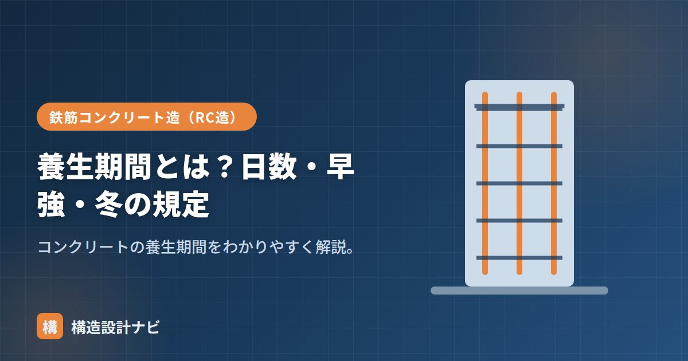

養生期間とは？日数・早強・冬の規定

養生期間とは、湿潤養生を続ける日数のことです。セメントの種類・気温・要求性能によって必要な日数が変わります。養生そのものが「何をするか」を表す言葉であるのに対し、養生期間は「どれくらいの期間続けるか」という具体的な日数を定める考え方です。必要な養生期間を短く見積もりすぎると、表面のコンクリート強度が不足し、ひび割れや中性化の進行が早まるおそれがあります。
- 養生期間はセメントの種類（水和の速さ）と気温によって必要日数が変わる
- JASS5では早強3日・普通5日・高炉B/中庸熱7日以上が代表的な目安
- 寒中コンクリートは日数ではなく所定強度に達するまで凍結を防ぐ考え方をとる
養生期間の目安（セメント別）
JASS5では、計画供用期間の級やセメントの種類に応じて湿潤養生期間が定められています（代表的な目安）。
| セメント | 湿潤養生期間（目安） |
|---|---|
| 早強ポルトランド | 3日以上 |
| 普通ポルトランド | 5日以上 |
| 高炉B・中庸熱・フライアッシュB | 7日以上 |
長期の耐久性を求める場合は、さらに長い養生期間が必要になります。
気温による違い
気温が低いほど水和が遅く、必要な養生期間は長くなります。逆に高温では強度発現が速いものの、急乾燥に注意が必要です。
養生期間はどう決まるのか
養生期間の長さは、突き詰めれば「表面のコンクリートがどれだけ早く十分な強度を得られるか」で決まります。早強ポルトランドセメントは水和反応が速く進むため短い日数で必要な強度に達しますが、高炉セメントB種やフライアッシュセメントB種は水和の進みがゆるやかで強度発現に時間がかかるぶん、長い養生期間が必要になります。同じセメントでも気温が低いと水和反応の速度そのものが遅くなるため、夏季より冬季の方が長い養生期間を要します。つまり養生期間は「セメントの水和速度」と「気温」という2つの要因の掛け合わせで決まると考えると理解しやすくなります。
冬（寒中）の規定
寒中コンクリートでは、初期に凍結すると品質が大きく低下します（初期凍害）。そのため、所定の強度（おおむね5N/mm²）に達するまで凍結させないよう、保温・給熱養生を行います。早強セメントを使うと早く強度が出るため、寒中で有利です。
寒中コンクリートの養生期間は、「〇日間」という日数ではなく「初期凍害を受けない強度に達するまで」という強度基準で管理される点が、通常期の養生期間と大きく異なります。気温が氷点下近くまで下がる時期は、養生日数だけを目安にすると強度発現の遅れを見落とすおそれがあるため、必要に応じて温度計測や強度試験によって管理する方法がとられます。
よくある注意点
「規定の日数を経過すれば養生完了」と単純に考えるのは危険です。同じ日数でも気温が想定より低ければ強度発現は遅れます。養生期間はあくまで標準的な条件下での目安であり、実際の気象条件や部材の断面寸法（マスコンクリートかどうかなど）に応じて、期間を延長する判断が必要になる場合があります。
工事監理で指摘することが多いのが、規定日数を過ぎたからと型枠を早めに外そうとする現場判断だ。冬場は気温次第で強度発現が遅れるため、日数だけでなく現場の気温の推移や強度試験の結果まで確認するよう伝えている。
計画供用期間別の養生期間
養生期間は、セメントの種類だけでなく建物を何年使う想定かによっても変わります。
| セメントの種類 | 短期・標準 （約30〜65年） | 長期・超長期 （約100〜200年） |
|---|---|---|
| 早強ポルトランド | 3日以上 | 5日以上 |
| 普通ポルトランド | 5日以上 | 7日以上 |
| 中庸熱・低熱・高炉B種 フライアッシュB種 | 7日以上 | 10日以上 |
※JASS5に基づく代表値。実際は仕様書で確認してください。
長く使う建物ほど養生期間が長いのは、表面の緻密さが耐久性を左右するためです。中性化や塩害は表面から進行するため、表層のコンクリートを十分に水和させておくことが、100年もたせるための前提条件になります。
気温と養生期間の関係（図解）
養生期間を「日数」ではなく温度×時間の累積（積算温度）で管理する方法もあります。たとえば「20℃で5日」と「10℃で10日」は、積算温度としてはほぼ同等と考えられます。寒冷地の工事や、季節をまたぐ工程では、単純な日数より積算温度のほうが実態に合った管理ができるため、採用されることがあります。
よくある質問
Q1. 養生期間を短縮する方法はありますか？
早強ポルトランドセメントの使用、給熱養生（加温）、促進剤の使用などがあります。特に早強セメントは、普通セメントの材齢7日相当の強度を材齢3日で得られるため、養生期間を短縮できます。ただし水和熱が大きく乾燥収縮も増えるため、部材の大きさによっては温度ひび割れのリスクが高まります。工期短縮の効果と品質のバランスを検討する必要があります。
Q2. 養生期間と型枠の存置期間は同じですか？
別の概念です。養生期間は水和反応を進めるために湿潤状態を保つ期間、型枠の存置期間は型枠を取り外してよい時期を判断する基準です。型枠が接している面は型枠が乾燥を防ぐため、存置期間中は湿潤養生を兼ねますが、スラブ上面など型枠のない面は別途養生が必要です。また、支保工の存置期間は構造安全性の観点から別に定められています。
Q3. 養生期間が守られたかはどう確認しますか？
施工記録での確認が基本です。散水の実施状況、シートの設置・撤去日、気温の記録などを日報や写真で残します。第三者的な確認方法としては、構造体コンクリートの強度（現場水中養生・現場封かん養生の供試体）が所定の値を満たしているかを見ることで、養生が適切だったかを間接的に評価できます。表面の状態（ひび割れの有無、テストハンマーによる反発度）も参考になります。
まとめ
- 養生期間は湿潤養生を続ける日数。早強3日・普通5日・高炉/中庸熱7日以上が目安。
- 気温が低いほど長く必要。セメントの水和速度と気温の掛け合わせで決まる。
- 冬（寒中）は所定強度まで凍結させないよう保温・給熱養生する（日数ではなく強度基準）。
- 実際の気象条件・部材断面に応じて期間を延長する判断が必要な場合がある。